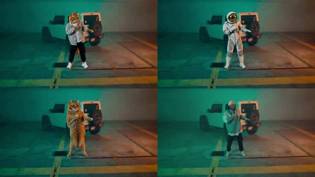
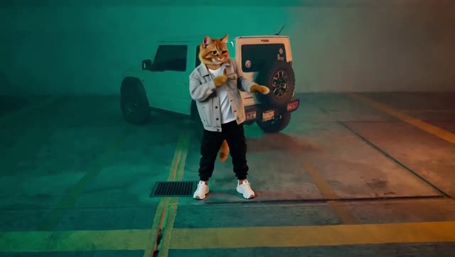
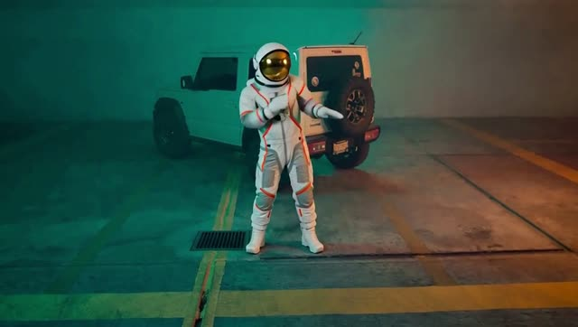
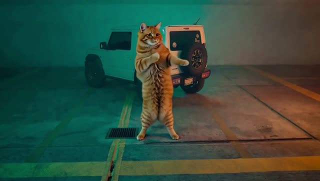

Which three characters are shown?
A cat in streetwear, an astronaut, and a real four-legged cat dancing upright.
← Portfolio AI · video experiment
One 19-second, 16:9 video opens with a quick montage of the body-swap characters, then switches to a 2×2 comparison grid with the original dancer.
The default workflow uses one reference image with the guide video, MiniMax H3 and the BFS Character Swap v1.1 LoRA. Dancer footage: Mixkit (Mixkit Stock Video Free License). No real person’s face is swapped onto anyone.




A cat in streetwear, an astronaut, and a real four-legged cat dancing upright.
One reference image and the guide video are processed with MiniMax H3 and the BFS Character Swap v1.1 LoRA.
No. No real person’s face is swapped onto anyone.